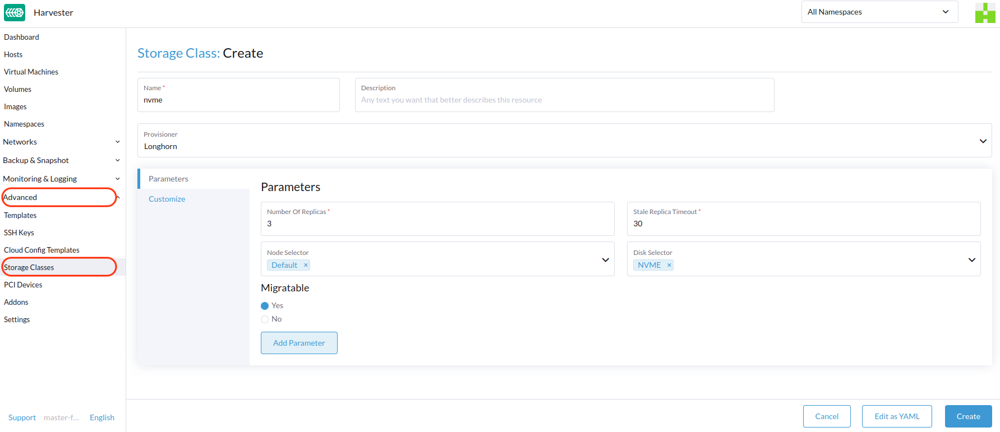
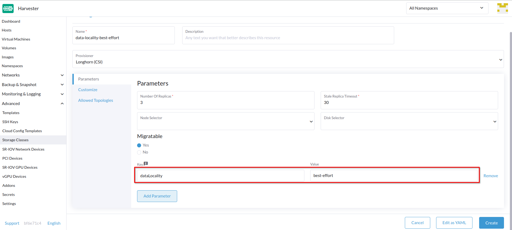

|
Este documento ha sido traducido utilizando tecnología de traducción automática. Si bien nos esforzamos por proporcionar traducciones precisas, no ofrecemos garantías sobre la integridad, precisión o confiabilidad del contenido traducido. En caso de discrepancia, la versión original en inglés prevalecerá y constituirá el texto autorizado. |
StorageClass
SUSE Virtualization utiliza StorageClasses para describir cómo SUSE Storage debe aprovisionar volúmenes. Las StorageClasses SUSE Storage pueden mapearse a políticas de réplica, políticas de programación de nodos o políticas de programación de discos creadas por los administradores del clúster. Este concepto se conoce como perfiles en otros sistemas de almacenamiento.
|
La StorageClass por defecto Para evitar este problema, puedes realizar cualquiera de las siguientes acciones:
|
Para información sobre el soporte para el aprovisionamiento de volúmenes utilizando controladores de interfaz de almacenamiento de contenedores externos (CSI), consulta Soporte de Almacenamiento de Terceros.
Creando una StorageClass
-
INTERFAZ DE USUARIO
-
API
-
Terraform
|
Después de que se crea una StorageClass, los campos en la sección Parámetros y la mayoría de las otras opciones se vuelven inmutables. |
-
Ve a StorageClasses Avanzadas →.

-
En la sección de información general, configura lo siguiente:
-
Nombre: Nombre de la StorageClass.
-
Descripción (opcional): Descripción de la StorageClass.
-
Proveedor: Proveedor que determina el complemento de volumen que se utilizará para aprovisionar volúmenes.
-
-
En la pestaña Parámetros, configura lo siguiente:
-
Cuenta de Réplicas: Cuenta de réplicas creadas para cada SUSE Storage. El valor por defecto es
3. -
Tiempo de espera de réplicas obsoletas: Número de minutos que SUSE Storage espera antes de limpiar una réplica con el estado
ERROR. El valor por defecto es30. -
Selector de Nodo (opcional): Etiquetas de nodo que deben coincidir durante la programación de volúmenes. Puedes añadir etiquetas de nodo en la pantalla de configuración del host (Host → Editar Config).
-
Selector de Disco (opcional): Etiquetas de disco que deben coincidir durante la programación de volúmenes. Puedes añadir etiquetas de disco en la pantalla de configuración del host (Host → Editar Config).
-
Migrable: Configuración que habilita Migración en Vivo para volúmenes creados utilizando la StorageClass. El valor por defecto es
Yes.
-
|
Si se utiliza una StorageClass con una cuenta de réplicas de |
-
En la pestaña Personalizar, configura lo siguiente:
-
Directiva de Recuperación: Directiva de recuperación que se aplica a los volúmenes creados utilizando la StorageClass. El valor por defecto es
Delete.-
Eliminar: Elimina volúmenes y los dispositivos subyacentes cuando se elimina la reclamación del volumen.
-
Retener: Retiene el volumen para limpieza manual.
-
-
Permitir expansión de volumen: Configuración que permite la expansión de volumen, lo que implica el redimensionamiento del dispositivo de bloque y la expansión del sistema de archivos. Cuando la configuración está habilitada, puedes aumentar el tamaño del volumen editando el objeto PVC correspondiente.
Solo puedes utilizar la función de expansión de volumen para aumentar el tamaño del volumen.
-
Modo de vinculación de volumen: Configuración que controla cuándo ocurren la vinculación de volumen y la provisión dinámica. El valor por defecto es
Immediate.-
De inmediato: Vincula y provisiona un volumen una vez que se crea el PVC.
-
WaitForFirstConsumer: Vincula y provisiona un volumen una vez que se crea una máquina virtual que utiliza el PVC.
-
-
-
Haga clic en Crear.
apiVersion: storage.k8s.io/v1
kind: StorageClass
metadata:
annotations:
storageclass.beta.kubernetes.io/is-default-class: 'true'
storageclass.kubernetes.io/is-default-class: 'true'
name: single-replica
parameters:
migratable: 'false'
numberOfReplicas: '1'
staleReplicaTimeout: '30'
provisioner: driver.longhorn.io
reclaimPolicy: Delete
volumeBindingMode: Immediate
allowVolumeExpansion: trueresource "harvester_storageclass" "single-replica" {
name = "single-replica"
is_default = "true"
allow_volume_expansion = "true"
volume_binding_mode = "immediate"
reclaim_policy = "delete"
parameters = {
"migratable" = "false"
"numberOfReplicas" = "1"
"staleReplicaTimeout" = "30"
}
}Configuraciones de localidad de datos
Puedes utilizar el parámetro dataLocality cuando al menos una réplica de un volumen SUSE Storage debe programarse en el mismo nodo que el pod que utiliza el volumen (siempre que sea posible).
SUSE Virtualization admite oficialmente la localización de datos. Esto se aplica incluso a los volúmenes creados a partir de imágenes. Para configurar la localización de datos, crea una nueva StorageClass en la interfaz de usuario de SUSE Virtualization (Clases de Almacenamiento → Crear → Parámetros) y luego añade el siguiente parámetro:
-
Clave:
dataLocality -
Valor:
deshabilitadoomejor-esfuerzo

Opciones de Localización de Datos
SUSE Virtualization actualmente admite las siguientes opciones:
-
deshabilitado: Cuando se aplica, SUSE Storage puede o no programar una réplica en el mismo nodo que el pod que utiliza el volumen. Ésta es la opción por defecto. -
mejor-esfuerzo: Cuando se aplica, SUSE Storage siempre intenta programar una réplica en el mismo nodo que el pod que utiliza el volumen. SUSE Storage no detiene el volumen incluso cuando una réplica local no está disponible debido a una limitación ambiental (por ejemplo, espacio en disco insuficiente o etiquetas de disco incompatibles).
|
SUSE Storage proporciona una tercera opción llamada |
Para más información, consulta Localización de datos en la documentación de SUSE Storage.
Configuraciones del Importador de Datos en contenedores (CDI)
SUSE Virtualization se integra con el Importador de Datos en contenedores (CDI) para gestionar la administración de imágenes de VM para las siguientes StorageClasses:
-
Motor de Datos Longhorn V2
-
LVM
-
Almacenamiento de terceros
Puedes usar la interfaz de usuario de SUSE Virtualization o las anotaciones de CDI para anular la configuración predeterminada de los atributos de StorageClass de CDI.
|
La interfaz de usuario de SUSE Virtualization actualmente no admite el uso de CDI con almacenamiento de terceros. Debes aplicar las anotaciones de SUSE Virtualization CDI directamente a la StorageClass de terceros. |
Para habilitar la edición de configuraciones de CDI para operaciones del día 2, SUSE Virtualization proporciona atributos de StorageClass que actualizan automáticamente las configuraciones subyacentes de CDI.
Cada campo en la pantalla Configuraciones de CDI corresponde a una anotación en la StorageClass.
| Campo de UI | Anotación | Descripción | Valores admitidos | Ejemplo |
|---|---|---|---|---|
Modo de Volumen / Modos de Acceso |
|
Modo de volumen PVC predeterminado y modos de acceso |
Objeto JSON con modos de volumen y modos de acceso |
|
Clase de Instantánea de Volumen |
|
Nombre de la clase de instantáneas de volumen que se utilizará al tomar instantáneas de imágenes de máquinas virtuales bajo esta StorageClass. Esta configuración se aplica solo cuando utilizas la estrategia de clonación |
Valid VolumeSnapshotClass name |
|
Estrategia de clonación |
|
Estrategia de clonación que se utilizará para volúmenes creados con imágenes de VM que utilizan esta StorageClass. |
|
|
Sobrecarga del sistema de archivos |
|
Porcentaje de sobrecarga del sistema de archivos a considerar al calcular el tamaño del PVC. |
Valor decimal entre 0 y 1 con un máximo de 3 dígitos |
|
Ejemplo de una configuración YAML de StorageClass:
apiVersion: storage.k8s.io/v1
kind: StorageClass
metadata:
name: lvm
annotations:
cdi.harvesterhci.io/storageProfileCloneStrategy: snapshot
cdi.harvesterhci.io/storageProfileVolumeModeAccessModes: '{"Block":["ReadWriteOnce"]}'
cdi.harvesterhci.io/storageProfileVolumeSnapshotClass: lvm-snapshot
cdi.harvesterhci.io/filesystemOverhead: '0.05'|
Evita cambiar el perfil de almacenamiento o el CDI directamente. En su lugar, permite que el controlador SUSE Virtualization sincronice y persista la configuración del perfil de almacenamiento a través del uso de anotaciones CDI. |
Los siguientes son los valores predeterminados para las StorageClasses soportadas:
-
Motor de Datos Longhorn V2
-
cdi.harvesterhci.io/storageProfileCloneStrategy:"copy" -
cdi.harvesterhci.io/storageProfileVolumeSnapshotClass:"longhorn-snapshot"
-
-
LVM
-
cdi.harvesterhci.io/storageProfileVolumeModeAccessModes:'{"Block":["ReadWriteOnce"]}' -
cdi.harvesterhci.io/storageProfileCloneStrategy:"snapshot" -
cdi.harvesterhci.io/storageProfileVolumeSnapshotClass:"lvm-snapshot"
-
-
Almacenamiento de terceros: Consulta
storagecapabilities.goen el repositorio CDI. Si el proveedor no está listado, debes especificar la anotacióncdi.harvesterhci.io/storageProfileVolumeModeAccessModes.
Casos de Uso
Escenario HDD
Con la introducción de StorageClass, los usuarios pueden ahora utilizar HDDs para almacenamiento en frío en capas o archivado.
|
No se recomienda el HDD para clústeres RKE2 de invitados o máquinas virtuales con requisitos de disco de buen rendimiento. |
Práctica Recomendada
Primero, añade tu HDD en la página Host y especifica las etiquetas de disco según sea necesario, como HDD o ColdStorage. Para más información sobre cómo añadir discos adicionales y etiquetas de disco, consulta Multi-disk Management.


Luego, crea un nuevo StorageClass para el HDD (utiliza las etiquetas de disco anteriores). Para discos duros con gran capacidad pero bajo rendimiento, se puede reducir el número de réplicas para mejorar el rendimiento.

Ahora puedes crear un volumen utilizando el StorageClass anterior con HDDs principalmente para almacenamiento en frío o con fines de archivado.